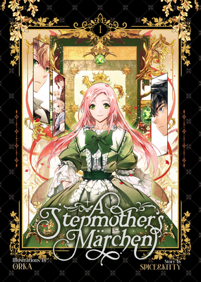
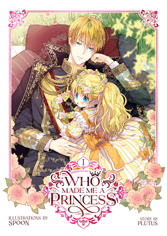

The marchioness Shuri Von Neuschwanstein was just a teenager when her husband died, leaving her to manage his lands and raise his children–even though she was young enough to be their sibling. Despite her dedication to her duties, other nobles conspired against her, and her stepchildren rejected her as their mother, leaving her a hardened pariah in her own home. But when she leaves for a new residence during her eldest stepson’s wedding, the marchioness dies and wakes up in the past... on the day of her husband’s funeral! If Shuri is to live these seven difficult years all over again, she’s going to do things differently. Can she rewrite her own fairy tale ending this time around?

The story of Athanasia, forsaken princess of the Obelian Empire, ends with her execution at the hands of her own father—except, did it? Her tragic tale is the plot of the novel The Lovely Princess. But now, a modern woman who read the book has just woken up as baby Athanasia herself, filled with her memories and knowledge of the story she's stuck in! Determined to survive her fate, infant Athanasia embarks on this new life with a plan: avoid attention and hoard valuables to fund her escape. When her plan goes awry, she suddenly needs to charm her way into the good graces of her father, the beautiful tyrant emperor, so he doesn't kill her again!